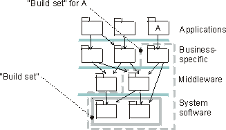

Roles and Activities >
Developer Role Set >
Roles and Activities >
Developer Role Set >
 Integrator >
Integrator >
 Plan System Integration
Plan System Integration
Roles and Activities >
Developer Role Set >
Integrator >
Plan System Integration
Activity:
| ||||||||||||
Purpose
|
|
| Steps | |
| Input Artifacts: | Resulting Artifacts: |
| Role: Integrator | |
| Workflow Details: |
The iteration plan specifies all use cases and scenarios that should be implemented in this iteration. Identify which implementation subsystems participate in the use cases and scenarios for the current iteration. Study the use-case realization's sequence diagrams, collaboration diagrams, and so on. Also identify which other implementation subsystems are needed to make it possible to compile, that is, create builds.

Implementation subsystems are identified from the use-case realizations.
In large systems where you may have up to a hundred implementation subsystems, it becomes a complex task to plan the integration.
To facilitate integration planning, and manage complexity you need to reduce the number of things you need to think about. It is recommended that you define meaningful sets of subsystems (build sets or towers), that belong together from an integration point of view. 'Belong together' in the sense that these subsystems are sometimes integrated as a group; it does not make sense to integrate just one of the subsystems. For example, all the subsystems in lower layers that a subsystem needs (imports directly, or indirectly) to execute, could be a meaningful build set.

A build set is defined for the lowest layer if these two subsystem often are integrated as a group. A build set is defined with all subsystems that are needed to compile and execute subsystem A.
Notice that the build sets can, and will, overlap. Which build sets and their contents you have may vary during the life of a project.
The purpose of defining these build sets is to make it easier to do the integration planning. Instead of thinking about individual subsystems you can think about sets of subsystems.
You define a series of builds to incrementally integrate the system. This is typically done bottom-up in the layered structure of subsystems in the implementation model. For each build, define which subsystems should go into it, and which other subsystems must be available as stubs. In the figure following, three builds have been defined.

An integration planned to be done in three builds.
To evaluate the Integration Build Plan consider the following check-points:
|
Rational Unified
Process
|